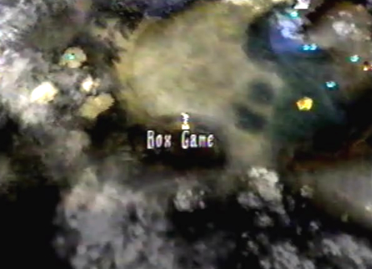
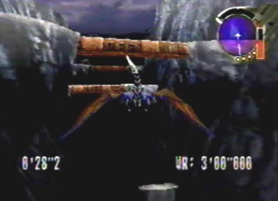
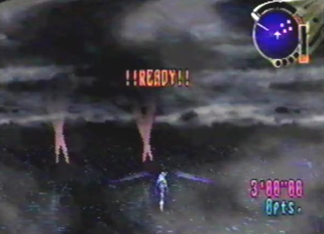

| Box Game After you beat Panzer Dragoon Saga, you'll be prompted to save. Do so, and reload your file. Found on the World Map, will be a new location called, Box Game. When you enter this area, the World Map will have three new areas to explore: Dermont's Ranch, Ancient Valley, and Fleet on the Lake. |
|
 1. Reload your game file, after beating PDS and enter the Box Game, found on the World Map. |
| Dermont's Ranch Dermont's Ranch is a strange place, resembling your campsite, where you get to control a baby dragon pup. Within the camp, you'll also find three more dragon pups, as well as your dragon. While playing as the dragon pup, hold down the B button to run, and press A to lock on to such things as: the other dragon pups, the dragon, the firewood, the tent, and the Aronak Unit ( Only available, if you acquired it during the game). When locking-on to the things mentioned above, you will receive a series of strange messages. Here are the messages for each object: 1. Dragon/Dragon
Pups: (#################) Also, try going to Dermont's Ranch at night. The dragon, as well as the dragon pups, will be asleep. You'll also get a couple of different messages, such as: 1. Dragon:
( <> <> <> <> <> <> <>
<> <>) There is nothing more to see or do other than, reading these strange messages. It's just a fun place to run around as the dragon pup, nothing more. |
|
1. Enter Dermont's Ranch, found within the Box Game. |
|
2. You will be able to control a dragon pup. Hold down the B button to run, and press the A button to lock on to an object. |
| 3. Locking-on to both the dragon and dragon pups, will yeild this message: (##################) |
| 4. Locking-on to both the firewood and tent, will yeild this message: (??????????????????) |
|
5. Locking-on to both the Aronak Unit and its dragon hologram, will yeild these messages: (OO XX OO XX) (!SEGASEGASEGASEGA!) |
|
6. At night, locking-on to both the dragon and the campfire, will yeild these messages: (<> <> <> <> <> <> <> <> <>) (!!!!!!!!!!!!!!!!!!) |
Ancient Valley Upon entering the Ancient Valley, you will arrive in an area called Ancient Coliseum. It closely resembles Excavation Site # 4. The point of this area is a race against the clock, from start to finish. You are given 3 minutes to do so. If you acquired the Villatuya Fruit from the Forest of Zoah, at the start of the race, you can reach your dragon's maximum speed by pressing the R button while flying. The race course, is filled with mine tracks and tall protruding rocks. These obstacles are fairly easy to navigate. Once you reach the finish, you are given the option to do the race all over again, to try and break your record. |
| 1. Enter Ancient Valley, found within the Box Game. |
| 2. If you acquired the Villatuya Fruit during the game, at the start of the race, you can perform a role while flying, by pressing the R button. This will enable your dragon to reach his maximum speed during the race! |
|  3. Be sure to fly under and above the mine tracks. Also, steer around the tall protruding rocks. |
| 4. After getting to the finish line, you can do the race all over again, to try and break your record. |
|
5. Go for the Record!! |
Fleet on the Lake Fleet on the Lake is a fun area, where you get to do some target practice. It resembles the Imperial Air force Post, and has many of the very same items you can destroy such as: spotlights, fans, and anchored ships. You are given 3 minuets to destroy as much stuff as you can. The best strategy is to keep holding down the A button, and lock on to the multiple targets surrounding you. It's also fun to destroy the hovering battleships, found throughout the area. When the 3 minutes are up, you will receive your score. You can also choose to just freely fly around the area, or you can restart, and try to break your record. |
| 1. Enter Fleet on the Lake, found within the Box Game. |
|  2. You'll have 3 minutes to destroy as much stuff as possible! |
| 3. The best strategy is to just hold the A button down, and lock-on to as many objects as you can. It's also fun to destroy the hovering battleships. |
| 4. After the 3 minutes are up, you can freely fly around, or restart, to try and break your record. |
Dragon Models Another extra feature besides the Box Game, is the ability to view all of the Dragon Models. Open the menu and select "Defeated Enemies" you'll notice a new symbol representing your dragon. You can now view all of the dragon forms. The forms bellow Solowing, look just like the dragon forms from Panzer Dragoon 2 Zwei and Panzer Dragoon, such as: 1. Defense
Class: Resembles Brigadewing from Panzer Dragoon 2
Zwei. |
| 1. Enter the menu and and view your "Defeated Enemy Data" you'll notice a new symbol representing your dragon. You can now view all of the dragon models. |
|
2. The dragon models below Solowing, represent dragon models from previous Panzer Dragoon games, such as: Brigadewing (PDZ), Windrider (PDZ), Skydart (PDZ), and the Dark Dragon (PD). |